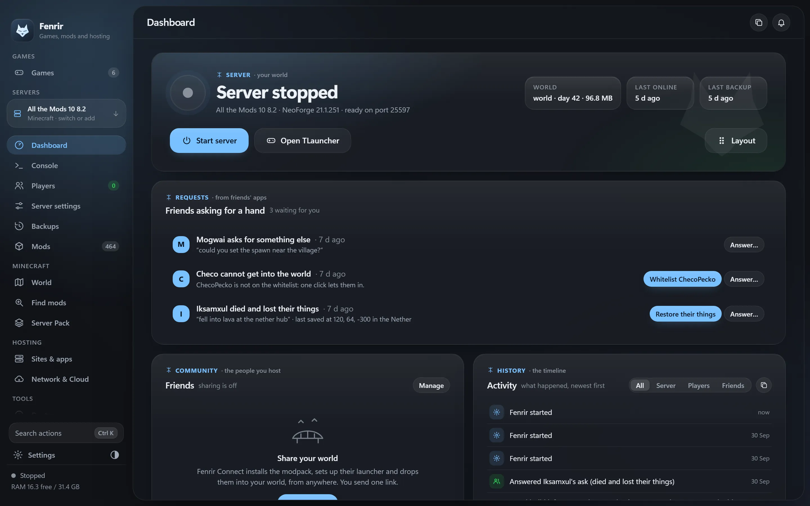

For the PC that hosts
Games, servers, sites. In one window.
Fenrir finds every game you own and mods it, hosts game servers and a Minecraft world for friends, mashes games together, puts your own websites and apps online, keeps backups off the PC and fixes what breaks, and does what you ask in plain words. Here it is, page by page.

Games
Every game you own. Mods that come out whole.
Fenrir finds your games from Steam, Epic, GOG, Ubisoft, EA and Xbox, and the ones you own but have not downloaded: open one for its screenshots, trailer and engine, then install it from its store. Its Discover shelf shows the mods people play most for each game. Thunderstore mods install with one click for around 300 games, GameBanana and Nexus Mods are a search away, and removing mods puts every original file back. Games whose anti-cheat bans for changed files are shown and never touched.
Games · every game you own
Remove all from the game
Game servers
Host the game. Friends join with the same mods.
Valheim, Palworld, 7 Days to Die, Terraria, GTA V through FiveM and Skyrim Together: install the server, start it, and it gets the same mods as your game. Share the game, or send one friend a link to it, and their Fenrir Connect gets their own copy ready from where the mods are published (a mod you made comes from your PC), then joins you. Valheim even gives them a join code, with no router ports and no VPN. Each server then has the same pages as the Minecraft world: its dashboard, its live log, its players, its settings and backups of its world. And each one looks after itself like the world does: it starts again after a crash (and stops trying after three in ten minutes), comes back after Windows restarts, restarts each day at your hour while nobody is on, backs up its world on a timer, and shows its CPU, memory and last error.
Valheim server · running for 45 min · 2 of 10 playing
A friend’s Fenrir Connect
Mashups
Up to four games. Built with you.
Mash up games opens one sheet: the game you play in, up to three more, and what each brings, from its world and weapons to its vehicles, building and music. A game you have not downloaded can join too: Fenrir plans it from its engine. The project starts with a brief, a starter that loads into the game and a log the builder reads. The builder is the AI you pick, LM Studio or Ollama on this PC, or OpenRouter, Anthropic, OpenAI or Gemini with your own key, which Windows keeps encrypted. It asks before it builds, puts the mod into the game or plays it, unless you say Always for this project, and Fenrir Link can answer from your phone. Each project carries universal-modder's guides for its engines and other modders' notes on its games, a mashup's first Play keeps the game's saves first, and nothing goes to friends before Fenrir has looked it through for the game's own files and keys.
Mashups · up to four games
The builder · asks first
Crash help and mod sets
It names the mod. You play again.
When a modded game closes with an error, its page says what happened. Fenrir reads what the game wrote and what its mod loader wrote (BepInEx, MelonLoader, Unity and Unreal games, Script Hook for GTA V, SKSE and crash loggers for Skyrim, tModLoader) and Windows' own record of the crash. A mod whose file is named in the error is likely to blame; one named further down may be. Take it out, or take it out and play, in one press. The game's own files and the mod loader itself are never blamed.
Mod sets keep the mods that are on, in their order, under a name: a story run, a night with friends. Fenrir also remembers the mods each Play used, so when a new mod breaks the game, the set you played with on Tuesday comes back with Go back to these.
When it crashes · read 10 min ago
Mod sets · 3 saved
Ask Fenrir and AI apps
Tell it what you want. Say yes to what it does.
Type a sentence into the command palette and choose Ask Fenrir. Fenrir understands the everyday ones on its own, with no AI at all: start or stop a server, who is on, back up, say something to everyone, a game night on Friday at 8 on Palworld, invite Sam, turn a mod off, play a game. Anything else goes to the AI you picked for the mashup builder (on this PC or with your own key). Fenrir says what it looked at, and lists every change with a tick box that happens only when you press Do it.
AI apps on your PC can use Fenrir too, through MCP, the protocol Claude Code, Claude Desktop, Cursor and others speak. Switch it on in Settings and press Add to Claude Code or Add to Claude Desktop. Apps start by looking only. Allow changes and, with Ask me first, each one waits for your Allow in Fenrir's window. Nothing opens to the Internet: apps reach Fenrir through a small bridge on this PC, with a key Windows keeps for you, and every change lands on the timeline with the app's name.
- No AI needed for the everyday
- Look only, until you allow more
- Never a new tunnel or port
AI apps · Claude Code, Claude Desktop and others
Claude Code · wants to do this
Sites and apps
Anything on this PC. Online with one switch.
Sites & apps hosts three kinds of thing: a folder Fenrir serves as a website, with no folder listings and no hidden files; an app or project Fenrir starts with its own command, with PORT set and its output kept in a log; or a port a program on this PC already serves. Each has its switches: a free public address from Cloudflare, with no account, that changes when it restarts; your home network, with the Windows Firewall rule Windows asks you about; and start with Fenrir. With a domain of your own on Cloudflare, paste its tunnel’s token once and each item answers at its own name. Windows keeps the token encrypted.
Sites & apps · an app or project
Its folder- PORT is 3000 for it
- Its output goes to its log
Game night page
Dashboard
Who is in. What needs you.
Server health with TPS, tick time and memory. Every friend from invited to in the world. Asks with the answer one click away. A timeline of everything, kept across restarts, and charts for a week.
Health · the last day
Performance
Community
Friends 1 installing
Console
The log, made readable.
Filter by level, search with highlights, copy any line, and open spark and mclo.gs reports as links. Commands complete with the names of who is online, and a bar talks to everyone.
- [Server thread/INFO] Done (38.412s)! For help, type "help"
- Iksamxul joined the game
- [Server thread/WARN] Can’t keep up! Running 2140ms or 42 ticks behind
- [Connect] Iksamxul: on my way, five minutes
- Lag report from spark: spark.lucko.me/Ab12Cd34
- Iksamxul has made the advancement [Diamonds!]
- [Server thread/INFO] Saved the game
Players
Names arrive spelled right.
When a friend opens Fenrir Connect, their TLauncher name arrives with a Whitelist button. Operators, bans, stats and where each player was last saved sit on the same page.
Backups
Undo a bad night. Or one bad death.
Archives are checked before an old one goes, and a restore swaps in only when every file is out. After a death, bring back one player’s inventory, ender chest and position.
Safety · a way back
Archives a month of history
The restore drill three days ago brought the world back whole
Restore one player
- Inventory and ender chest
- Position and XP
Mods, Library and Server Pack
Updates that test themselves first.
Compare mods shows what comes, goes and changes. The update backs up, installs, and starts the new version once to check it. Every mod change is written down and can go back.
Server pack · updates from CurseForge
All the Mods 10 8.2 to 8.3
- 21:02
- Backup checked, 84.9 MB
- 21:04
- Server files installed
- 21:05
- Starting 8.3 once to check it
- next
- Friends’ pack moves to 8.3
If it crashes, stops or hangs, 8.2 comes back by itself, with the world.
Recent changes
Doctor
It knows what breaks a pack.
Java, loader, memory fit, ports, stale locks, duplicate mods, crash suspects, tunnels, friends on an old link, failing uploads, restore drills, silent stops and disk. Each finding comes with its fix.
Health · what the Doctor checks
Doctor 2 need you
- Java
- Loader
- Offline-mode locks
- Memory fit
- Port conflicts
- Stale locks
- Duplicate mods
- Crash suspects
- Login mod
- Client pack
- Tunnels
- Fenrir Connect
- Friends on an old link
- Cloud uploads
- Restore drills
- Silent stops
- Disk
Network and Cloud
A fixed address. No router setup.
A free playit tunnel gives the game a fixed address. Friends’ downloads go through a Cloudflare quick tunnel or a fixed Tailscale address. Backups copy to a cloud folder, MEGA or Koofr.
Automation
Plan the night. It starts itself.
Plan a night once or every week. The world starts ten minutes early, Discord hears an hour before, friends answer I’m in, and an empty world stops 30 minutes after the last one leaves.
Automation · game nights
Friday game night every week, 21:00
- 20:00
- Discord hears about it, and friends get a reminder
- 20:00
- Packs update by themselves for everyone who is in
- 20:50
- The world starts, ten minutes early
- 21:00
- Game night
- 23:40
- The last player leaves
- 00:10
- The empty world stops
Settings and Appearance
Find any setting by typing.
Find a setting filters every row as you type. Eight themes read at WCAG AA in light and dark, and the wolf mark takes your accent colour. Settings also lists everything Fenrir changed on this PC: its files in your games, the firewall rules and router ports it added, what is online, starting with Windows, and its folders, each with its way back.
Keyboard
Press Ctrl K. Then type.
The command palette finds pages and actions, and it can invite a friend. Type a whole sentence and Ask Fenrir is the first choice. Ctrl and a number jump between pages, and the slash key goes to the console.
Ctrl+K paletteCtrl+1to9 pages/ console
Start with > to run a console command, or with say to talk to everyone.
Every page
Sixteen pages. One job each.
- GamesEvery game you own, even not downloaded: previews, mods put back whole, servers and mashups.
- DashboardAny server you host, picked in the sidebar: start and stop, who is on, how friends join; for the Minecraft world also asks, the timeline and charts.
- ConsoleThe server's live log with search; the Minecraft world's with filters, report links and commands.
- PlayersWho is on; for Minecraft the whitelist, operators, bans, stats and records.
- Server settingsEach server's own; for Minecraft 37 server.properties keys by topic and game rules applied live.
- BackupsAny server's world kept and put back; for Minecraft also checked archives, one player back and cloud copies.
- WorldWorld border, Chunky pre-generation, spark, a map of the world.
- ModsSwitch mods on and off, drag in jars, update checks, recent changes.
- LibraryModrinth and CurseForge search, installed with their dependencies.
- Server PackInstall or update a pack, compare mods, rehearse an update.
- Sites & appsEverything you host: websites, apps and ports, with a free address or your own domain.
- Network and CloudTunnels, Fenrir Connect sharing, keys and cloud backups.
- DoctorFinds what is wrong and fixes it with one click.
- GuideA live setup checklist with a button on every step.
- AppearanceEight themes, light and dark, accent, density, motion, text size.
- SettingsWorlds, paths, behaviour, Discord, the phone remote and About.
One PC is enough. Start tonight.
Fenrir is free for Windows 10 and 11. The Guide page walks you from the pack to the first friend.
Fenrir Setup for Windows 10 and 11